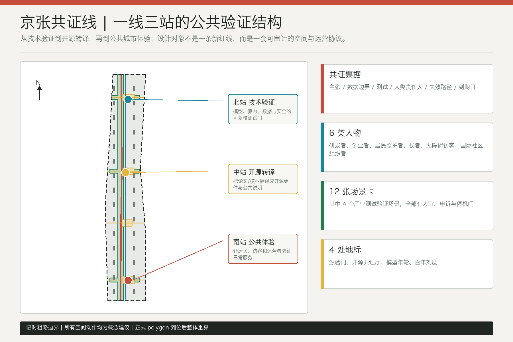
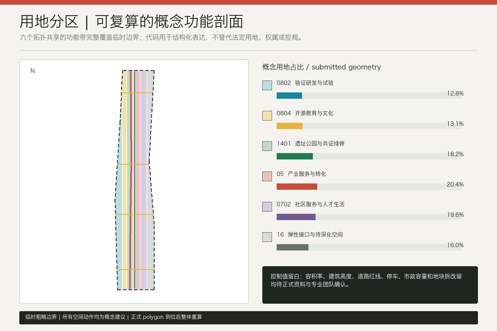
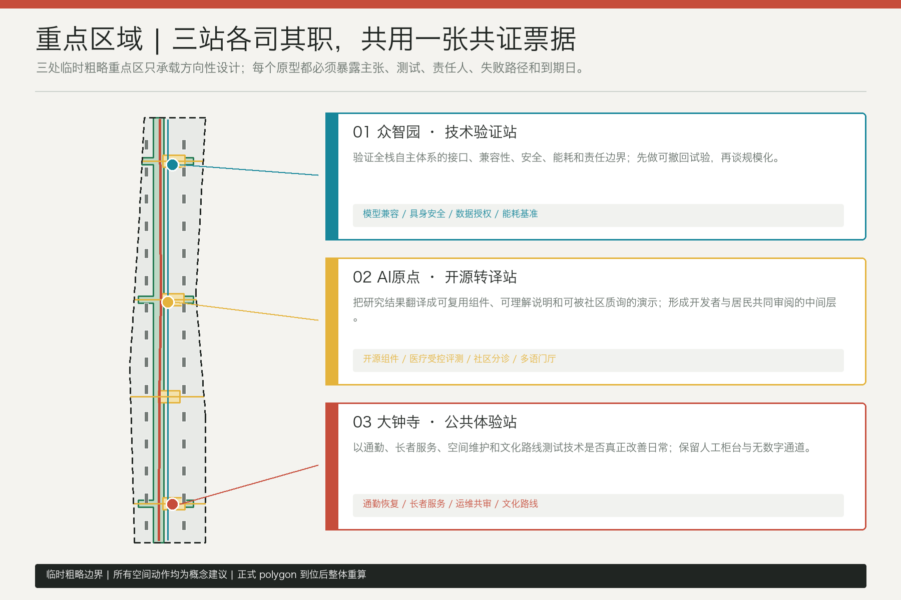
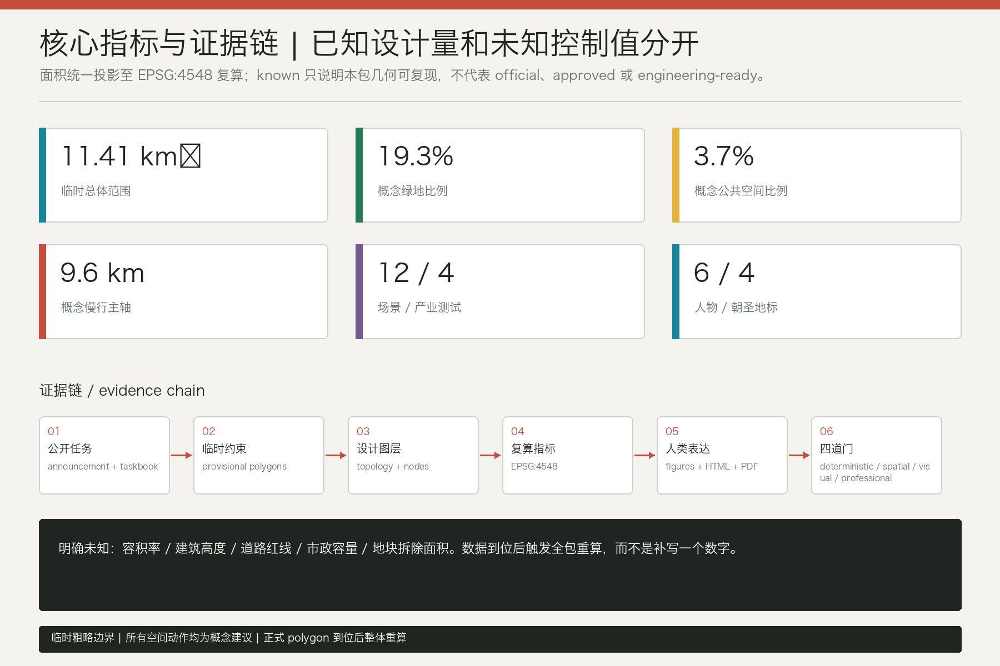

京张共证线：面向公共验证的AI创新城市共同体
以京张遗址公园公共慢行主轴串联技术验证、开源转译和公共体验三站，用一张可审计的共证票据约束12个AI场景；全部空间成果基于临时粗略边界，并保留正式数据到位后的整体重算门。
京张共证线：面向公共验证的AI创新城市共同体
设计依据与资料清单
本方案把“资料能支持什么判断”放在“想画什么”之前。任务边界以北京市规划和自然资源委员会海淀分局发布的征集公告、仓库内面向智能体任务书及专业标准本地快照为依据；用地分类、允许图层、来源状态和指标结构分别读取仓库枚举、allowed_design_space.json、data/source_registry.json 与各 JSON Schema。data/processed/agent_fact_pack.md 只作为阅读导航，不被提升为新的事实权威。正式判断优先引用登记为 formal-ready 的公开或清权资料，外部案例仅用于机制比较，临时 polygon 仅用于生成、展示与本地自检 来源 来源。
当前缺少组织方提供的精确 SITE_BOUNDARY 与三处 KEY_AREA polygon。为形成可讨论的完整成果，本包沿用仓库登记的 provisional rough geometry，并在 geometry/site_boundary.geojson、geometry/key_areas.geojson、sources.json 与 assumptions.json 中重复写明用途限制。由该临时边界在 EPSG:4548 下复算的提交范围为 11,412,825.386 平方米；这个数值只证明本包内部可复现，不能称为官方红线面积、地块面积、审批依据或法定控制 空间数据 指标。
生成顺序严格保持同源：先锁定临时边界与重点区，再由同一边界切分完整无缝的用地拓扑，随后生成概念建筑模块、慢行连线、绿地、公共空间、场景节点与分期，最后统一投影复算指标并派生中英文图件、HTML 和 PDF。官方 polygon 一旦到位，不能只替换一张底图，而要整体重建九个 GeoJSON、全部指标、五对图件、两套 HTML 和四份 PDF。容积率、建筑高度、道路红线、市政容量、权属、现状建筑和地块拆改留在本包中保持“待正式数据补齐”，不以推测值填空 深度 标准。

三层范围工作框架
三层范围承担不同决策，不是同一张图放大三次。统筹研究范围约 43.6 平方公里，回答海淀创新资源如何通过高校策源、开源协作、企业转化、公共测试和国际传播形成完整生态；总体设计范围约 11.4 平方公里，回答产业、生活、交通、公共空间和更新项目如何形成可复核的空间骨架；三处重点区域合计公告约 368.4 公顷，回答一个具体原型如何落到场所、用户、运营责任与失败处置。前一层给后一层提出问题，后一层用场景与空间反馈前一层，而不是用伪精确总图替代研究 来源 深度。
| 层级 | 核心问题 | 本方案输出 | 资料边界 |
|---|---|---|---|
| 统筹研究范围 | 创新链与城市公共利益如何耦合 | 三大定位、五大功能、三区两翼协同、六个国际案例比较 | 只使用公告与公开机制，不新增范围红线 |
| 总体设计范围 | 一线三站如何转成连续空间与项目序列 | 六带用地拓扑、9.63 公里概念慢行主轴、绿地/公共空间、概念建筑模块 | 临时边界内的方向性设计，控规和工程条件待补 |
| 重点区域范围 | 技术、开源、公共体验分别如何验证 | 众智园技术验证站、AI原点开源转译站、大钟寺公共体验站 | 三处 polygon 均为临时粗略范围，不支持地块结论 |
总体概念名为“京张共证线 / Jing-Zhang Proofline”。“线”指向京张文化记忆、连续步行与知识流动的公共骨架；“共证”不是技术认证或区块链口号，而是一条公共规则：任何进入城市空间的 AI 原型都要说明主张、数据边界、测试方法、人类责任人、失败路径和到期日。北站负责技术验证，中站负责开源转译，南站负责公共体验，三站共享同一张“共证票据”，让创新结果可以被下一站复用和质询 来源 空间数据。
临时总体边界在图上始终使用低对比虚线，视觉重点落在廊道、节点、场景和证据链上。三处重点区的数量是确定的任务事实，但形状和面积精度不是；因此本方案把可继续深化的空间关系落图，把仍需政府和专业团队确认的控制条件留白。完整用地拓扑覆盖提交边界且无缝无叠，但只是一套概念功能剖面 空间数据 指标。

统筹研究范围产业与未来城市研究
三大定位在“共证”机制中得到可操作翻译：百年京张文化带负责保存时间证据和公共记忆；都市 AI 生活体验带负责让居民、通勤者、长者与访客检验服务；AI 融合创新带负责让模型、算力、数据、场景和治理形成可复核的转化链。五大功能不被分成五座封闭园区，而沿一线三站循环：全栈自主创新在北站受测，世界级创新生态在中站被转译，AI+场景与活力城市在南站被日常使用，治理话语权则来自公开的测试规则、问题台账和退出机制 标准 深度。
“三区两翼”按能力交换而不是行政拼图组织。众智园输出可测试的技术组件；AI原点社区把组件翻译为开源工具、公共说明与创业服务；大钟寺检验智能原生消费、商务和公共服务是否真正改善日常。中关村科技服务翼提供法律、标准、资本、人才和国际传播接口，小月河场景赋能翼提供连续公共空间和真实但受控的场景问题。两翼向三站输送问题与服务，三站返回已公开边界、可复现结果和失败教训。
视觉识别采用“两条平行轨迹 + 三个开放圆环 + 一条穿行刻度”的方向：平行线对应铁路记忆与公共验证，三个不闭合圆环对应可进入、可质询的三站，刻度对应一百年历史和原型到期日。主色不是单一科技蓝，而是铁路砖红、公共绿、验证青、开源黄与中性黑白；中文名与英文名同等出现。该标识只使用原创几何和系统字体方向，不调用企业 Logo、未授权字体、人物或历史图片。
六个国际案例只提供机制镜片，不提供场地控制、规模参数或“照搬模板” 来源 来源：
| 背景案例 | 观察的机制 | 京张转译 | 不采用的做法 |
|---|---|---|---|
| MaRS Discovery District | 研究、创业与支持服务的连接 | 中站设置跨专业转译桌与验证档案 | 不复制机构规模或招商数据 |
| STATION F | 集中式创业项目与共享服务 | 用开放预约的共证票据连接不同计划 | 不建设封闭巨型创业园作为默认答案 |
| one-north | 研究、商业和城市生活的混合关系 | 三站之间用公共空间而非围墙连接 | 不导入其用地指标或治理制度 |
| Tokyo Innovation Base | 开放协作与公共会聚 | 建立定期公开检验和国际开发者门厅 | 不把活动设想写成政府已确定安排 |
| UnternehmerTUM | 高校关联的创业与原型能力 | 北站形成原型测试、转译和复盘链 | 不编造合作伙伴或投资承诺 |
| Kendall Square | 高密度研究产业区与地区协作 | 把公共收益、基础设施与运营责任列为进入门 | 不引用未经核实的产值或租金数据 |
未来城市形态的判断是“小步、开放、可逆”。AI 设施优先进入既有公共服务触点和可撤回的临时原型，不以巨型屏幕、封闭算力园或强制 App 作为城市形象。每个原型经过技术证据、开源解释和公共体验三轮，失败也进入知识库。这样，创新带的核心资产不是一次性建筑造型，而是持续产生可信测试、复用组件、公共问题和人才协作的城市协议。
总体设计范围城市更新与控规深度城市设计
总体结构为“一条共证绿脊、三座验证站、四处公共横向接口、六个概念功能带”。land_use.geojson 以共享坐标切分临时边界，完整覆盖而无重叠；roads.geojson 只画概念步行、骑行与横向缝合关系；green_space.geojson 和 public_space.geojson 建立连续绿脊与四个公共房间；buildings.geojson 的 30 个灰色模块只测试空间供给，不代表现状建筑或确认建设量 空间数据 深度。
更新不从“拆多少”开始，而从“哪些公共能力缺失”开始。第一类缺口是跨站验证缺乏统一票据和可复用档案；第二类是慢行、无障碍与东西向公共连接不连续；第三类是科研成果缺少面向创业者、居民和公共机构的转译空间；第四类是场景展示容易只显示成功而不显示失败与申诉。对应的空间动作分别是共证票据台、连续慢行线、开源共创房间和公开问题墙，优先采用可撤回、可轮换的轻量原型。
本包复算的概念建筑基底为 478,039.035 平方米，来源是 30 个程序包络的 union area，置信度为低。它用于比较“空间放在哪里”，不用于推导总建筑面积、容积率、投资或施工规模。容积率、建筑高度、退线、停车、道路红线与公共服务定额均保持 unknown；正式控规、现状测绘、权属和专业评估到位后才能形成地块级方案 指标 标准。
城市风貌采用“基础界面克制、公共节点清晰、原型组件可更新”的原则。沿线大体量与天际线不在缺少控制条件时编造；专业团队后续应比较遗址视线、日照、风环境、首层公共性、屋顶设备、存量碳和街道尺度。砖红只用于文化刻度，青色用于验证信息，绿色用于可达公共空间，黄色用于开源协作，避免把整条带塑造成单一科技主题景观 标准 深度。
重点区域详细设计
三处重点区域全部使用仓库临时粗略 polygon，图中的矩形或直边不能解释为道路、地块或产权边界。方案在每一站都给出“定位 + 空间结构 + 建筑更新门 + 交通慢行 + 公共空间 + AI 场景 + 实施风险”，但不给出法定容积率、高度、拆改留或工程可行性结论。官方重点区 polygon 到位后，三处子方案与所有交叉指标必须整体复算 空间数据 深度。
众智园 AI 自主创新加速区：技术验证站。 空间上把北段共证绿脊、验证广场和可撤回的概念实验模块组织成“测试门—复盘台—公开结果廊”。模型兼容性、具身智能人行安全、可信数据授权和算法能耗基准四个产业测试先在受控环境运行，再以不暴露秘密或个人数据的摘要进入公共展陈。建筑动作优先评估既有空间能否适配实验、会议、标准讨论与公众说明；新建只作为专业团队在正式控规和工程条件下的备选。主要风险是安全边界、算力能耗、供应商锁定与测试结果被误读为认证 空间数据 来源。
北京 AI 原点社区：开源转译站。 中站不是单纯展厅，而是把论文、模型和测试结果翻译成开源组件、公共语言、创业服务与社区问题的中间层。开源共证厅、医疗 AI 受控评测、社区议题分诊和多语开发者门厅围绕中央公共房间展开；每项服务都展示输入边界、人工责任人和退出方式。慢行接口连接东西两侧服务，不以强制注册换取进入公共空间。建筑深化先验证首层可见度、可达性、声环境与不同团队共享时段，再讨论物理改造 空间数据 标准。
大钟寺 AI 产业聚集区：公共体验站。 南站用通勤中断恢复、长者低数字服务、公共空间维护共审和文化记忆路线检验技术是否改善普通一天。公共体验场保留人工柜台、纸质说明和无智能设备通道；消费与商务原型只能在清楚标价、可退出和不滥用画像的条件下测试。空间上以轨迹刻度连接遗址叙事和模型年轮荣誉节点，避免把历史文化降格为科技装饰。主要风险是商业展示挤占公共空间、无障碍断点、过度采集和概念地标被误传为已批准建设 空间数据 来源。

AI 创新生态、人才画像与 AI+ 场景
方案以六类人物检查创新生态是否只服务技术提供者。人物不是虚构人口统计，而是设计审查视角：研发工程师关心可复现测试；创业与运营者关心接入成本和责任边界；居民照护者关心日常可靠性；长者和低数字能力用户关心人工替代；轮椅或视障访客关心首步无障碍；国际开发者与社区组织者关心多语、开放许可和跨文化解释 来源 指标。
| 人物 | 核心任务 | 最容易被忽略的失败 | 设计回应 |
|---|---|---|---|
| 研发工程师 | 复现实验并理解失败 | 只发布成功分数 | 公开测试条件、版本与失败日志 |
| 创业/运营者 | 把组件接入真实服务 | 责任边界和退出成本不清 | 共证票据、沙盒、到期复审 |
| 居民照护者 | 在有限时间内完成照护 | 服务中断后无人接管 | 人工转接、事件台账、补救路径 |
| 长者/低数字用户 | 不依赖智能设备获得同等服务 | 被迫扫码或阅读复杂解释 | 柜台、纸质说明、简明语言 |
| 轮椅/视障访客 | 连续进入并理解公共空间 | 物理无障碍和数字无障碍脱节 | 首步通路、触觉/语音替代、现场协助 |
| 国际开发者/社区组织者 | 跨语言参与和复用成果 | 术语、许可和文化语境丢失 | 双语档案、开放许可说明、社区主持人 |
每张场景卡都映射空间、对象、运行数据、隐私边界、人工复核、概念运营责任和主要风险。constraints.geojson 记录 12 个概念节点，其中前四个为产业测试验证；点位不代表批准部署，必须通过合法数据、专业安全、无障碍、运营主体和公共利益审查 空间数据 指标。
| ID | 场景与空间 | 服务对象 / 运行数据 | AI 任务 | 概念责任方 | 隐私边界 | 人审、申诉与退出 | 主要风险 |
|---|---|---|---|---|---|---|---|
| SCN-01★ | 北站开放模型兼容性测试 | 研发者；公开测试集、版本、日志 | 比较接口与可复现性 | 独立测试组 + 模型提供者 | 不导入秘密权重和个人数据 | 人工签发测试摘要；版本到期重测 | 分数被误传为认证 |
| SCN-02★ | 北站具身智能人行安全沙盒 | 行人、轮椅用户；模拟/自愿测试事件 | 识别冲突并验证停机 | 安全员 + 无障碍顾问 | 默认合成数据，现场测试需同意 | 安全员一键停机，事件可申诉 | 物理伤害、监控扩张 |
| SCN-03★ | 北站可信数据授权台 | 数据提供者、开发者；许可与用途记录 | 检查用途和到期条件 | 数据受托团队 + 法律顾问 | 最小字段、用途限定、可撤回 | 人工批准访问，超期自动关闭 | 二次用途漂移 |
| SCN-04★ | 北站算法能耗基准站 | 模型团队、运维者；能耗与任务质量 | 比较单位任务资源消耗 | 测试实验室 + 能源顾问 | 不采个人内容，只记任务摘要 | 人工复核口径，可拒绝排名 | 口径不一、绿色漂洗 |
| SCN-05 | 中站无障碍路径共驾 | 轮椅/视障访客；设施状态与匿名反馈 | 提供多模态路线建议 | 公共空间运营者 | 不保留连续个人轨迹 | 现场人员确认，允许离线路线 | 错误引导、设施失效 |
| SCN-06 | 中站医疗 AI 受控评测 | 医护/居民代表；脱敏或合成病例 | 检查解释、一致性与拒答 | 合格医疗机构 + 伦理审查 | 不接入真实诊疗，除非依法获批 | 专业人员最终判断，明确非诊断 | 误诊暗示、敏感数据泄露 |
| SCN-07 | 中站社区议题分诊 | 居民、社区人员；自愿提交的问题文本 | 聚类、路由和进度解释 | 社区服务团队 | 不做情绪画像或个人评分 | 人工定级，可更改与撤回 | 少数问题被算法淹没 |
| SCN-08 | 中站多语开发者门厅 | 国际开发者、组织者；术语与许可元数据 | 翻译、检索和协作匹配 | 开源社区主持人 | 不建立隐性人才画像 | 人工校对关键术语，可报告偏差 | 翻译失真、许可误读 |
| SCN-09 | 南站通勤中断恢复助手 | 通勤者；公开运行状态与匿名选择 | 生成可解释替代路径 | 交通信息服务方 + 现场人员 | 不强制上传身份或历史轨迹 | 人工广播与纸质方案并行 | 拥挤转移、信息过时 |
| SCN-10 | 南站长者低数字服务台 | 长者/照护者；当次服务需求 | 辅助查找和表单预填 | 受训服务人员 | 不留存无关资料，不强制人脸 | 工作人员逐项确认，可完全不用 AI | 数字排斥、错误代办 |
| SCN-11 | 南站公共空间维护共审 | 使用者、保洁/园林；设施事件和工单 | 排序并解释维护优先级 | 公共空间运营者 | 不使用人脸或个体行为追踪 | 人工排程，公开积压与复议 | 低频群体需求被忽略 |
| SCN-12 | 南站学习与文化记忆路线 | 学生、访客；清权史料与选择性互动 | 生成分龄、多语讲述 | 文化机构 + 教育者 | 儿童不做行为画像 | 史实校审、错误纠正入口 | 历史失真、版权误用 |
共证票据是跨场景的最小治理单元：claim 说明要改善什么，data boundary 说明不用什么数据，test 说明如何发现错误，human owner 指定承担解释和补救的人，failure path 说明停机、申诉与恢复，expiry 防止一次试验永久化。任何场景缺一项就不能从展示进入试点；试点通过也不等于政府批准或全面部署 标准 深度。
用地、建筑规模与拆改留方案
六个概念功能带由临时边界一次切分，面积合计与提交边界一致。比例是本包几何结果，用于比较公共、研发、服务和弹性空间之间的关系，不是法定用地平衡表 空间数据 标准。
| 代码 | 概念功能带 | 本包约占比 | 设计作用 |
|---|---|---|---|
| 0802 | 验证研发与试验 | 12.8% | 承载受控测试、复盘与标准讨论 |
| 0804 | 开源教育与文化 | 13.1% | 把技术转为课程、公共说明与文化叙事 |
| 1401 | 遗址公园与共证绿脊 | 18.2% | 形成连续公共骨架与跨站路线 |
| 05 | 产业服务与转化 | 20.4% | 支撑创业、法律、知识产权和转译服务 |
| 0702 | 社区服务与人才生活 | 19.6% | 支撑照护、日常服务和多样人才生活 |
| 16 | 弹性接口与待深化空间 | 16.0% | 为正式控规、设施和公共利益协商保留余地 |
buildings.geojson 的 30 个模块总基底 47.80 公顷，全部标注为 conceptual_program_envelope 和低置信度。它们不是现状楼栋，不能用于统计存量、测算总建筑面积或指认拆除。后续拆改留采用四道门：先核现状安全和权属，再核遗产/城市记忆和存量碳，再核空间适配与公共收益，最后比较更新、加固、再利用和新建的全生命周期代价。保留与适应性再利用为默认起点；拆除只有在官方资料、专业鉴定、公共程序和审批共同支持时才可能进入地块结论 空间数据 深度。
开发强度采用“明确未知 + 可复算触发器”。floor_area_ratio、building_height_m 和 parcel_demolition_area_sqm 均为 unknown；当官方边界、控规、建筑测绘、产权与工程条件到位后，专业团队重新生成程序包络、体量比较、日照风环境、停车与设施承载，并刷新所有指标与图纸。当前概念基底是设计量，不是确认建设规模 指标 深度。
交通、轨道、市政与公共服务设施
交通策略不另造精确道路或轨道线位。ROAD-001 是临时边界内长约 9,627.3 米的概念公共慢行主轴，ROAD-002 是平行骑行验证线，四条横向线表达三站及百年刻度花园的东西公共连接。它们用于检查连续性和服务接口，不是道路红线、轨道线路、桥隧方案或施工线形；精确交叉口、站口、消防、装卸、停车与交通容量须由官方数据和交通专业研究确认 空间数据 指标。
出行设计把“第一步”放在算法前：从轨道/公交接口到公共服务入口，应先有连续步行、轮椅与骑行条件，再提供实时信息；任何路线助手都必须与现场人员、清晰标识和纸质替代方案并行。中断恢复场景只使用公开运行状态和匿名选择，不把身份、历史轨迹或设备所有权变成进入条件。非机动车停放、共享出行、网约上下客和货运时段需要在正式交通调查后分区安排，避免把拥堵从主路转移到社区。
市政与新型基础设施只提出接口需求：场景设备需有可计量能耗、断网降级、边缘处理、数据最小化、设备更新与安全停机；公共空间需校核供电、通信、排水、消防、环卫和无障碍维护。当前没有核验过的管线、容量、负荷、地下空间或韧性数据，所以 municipal_capacity_index 保持 unknown，不给出分布式能源比例、算力规模或地下工程可行性结论 深度 来源。
公共服务设施采用“站点 + 流动服务”组合。技术验证站需要安全员、测试工程师和标准咨询；开源转译站需要开源主持人、法律/许可服务、医疗伦理与社区协调；公共体验站需要交通信息、长者协助、文化教育和运维人员。空间供应先通过共享时段和可撤回模块试验，再由专业团队结合人口、服务半径和设施标准深化。

蓝绿空间、公共空间与城市风貌
概念绿地 union area 为 2,203,386.315 平方米，占临时范围 19.3062%；四处公共空间 union area 为 426,827.020 平方米，占 3.7399%。这两个比例是由本包设计图层复算的空间建议，不是现状绿地调查或法定绿地率。共证绿脊提供连续遮荫、步行骑行、雨水花园和文化刻度的结构，三处横向花园把重点站与东西两侧日常界面相连 空间数据 指标。
“蓝”在当前资料中是待补条件，而不是凭想象画出的河道。正式水系、蓝线、洪涝、海绵设施、地下水和排水数据未进入本包，因此方案只要求后续把雨水路径、现状水体、生态连续性和维护责任纳入专业核验，不画精确水岸、桥梁或地下连通工程。公共空间优先保证首步无障碍、可坐可停、夜间安全、热舒适和非消费性使用；数字互动是可选层，不挤占普通使用 标准 深度。
四处“AI 朝圣与荣誉节点”是克制的公共知识载体，而非娱乐化巨构。源验门公开模型进入测试的条件与版本；开源共证厅展示可复用组件、贡献者署名和未解决问题；模型年轮按时间记录能力、能耗、错误与退出，而不只列成功排名；百年刻度把京张铁路记忆、中关村创新文化和 AI 新文化放在同一时间轴上。四处节点均为概念标识与活动装置方向，不构成已批准建筑 空间数据 指标。
文化叙事从“速度”转向“可追溯的进步”：铁路把城市与知识连接，开源文化把贡献与复用连接，公共验证把技术与责任连接。导视分为三层，整体 Logo 识别一带，站点色识别技术/开源/公共体验，场景票据识别具体原型；三层不能混成企业展陈。历史事实、图片、字体、商标和人物必须单独清权，任何生成内容都标明概念性质与来源。
更新项目清单、实施政策与分期计划
项目以“先协议、再临时、后固化”为顺序，避免在数据缺失时用建设量制造确定感。每项都列出进入门与退出门，运营主体均为建议角色而非已确定机构 空间数据 深度。
| 项目 | 概念内容 | 进入条件 | 退出/复审条件 |
|---|---|---|---|
| P1 公开空间基线 | 官方边界、控规、现状、权属、交通、市政和文保资料清单 | 资料发布与专业签认 | 来源变更即整体重算 |
| P2 共证票据协议 | 六字段票据、问题台账、版本与到期规则 | 法律、伦理、无障碍与运营审查 | 责任人缺失或无法申诉即停止 |
| P3 北站技术验证试点 | 四个产业测试场景和可撤回实验模块 | 独立测试、安全员、能耗计量 | 事故、数据越界或口径失真即停机 |
| P4 中站开源转译试点 | 组件库、许可服务、社区共审和多语门厅 | 清晰许可、主持人和公共说明 | 许可争议或社区损害未解决即下架 |
| P5 南站公共体验试点 | 通勤、长者、维护、文化四类日常服务 | 人工替代、可达性和现场运营 | 排斥、误导或维护失效即回退 |
| P6 共证绿脊与四个公共房间 | 连续慢行、遮荫、座椅、雨水与文化刻度 | 官方边界、绿地/水务/交通专业深化 | 公共性或生态绩效未达门槛即调整 |
| P7 边缘与市政接口 | 计量供能、断网降级、设备更新和安全停机 | 容量核验、网络安全与运维预算 | 容量不足或无法维护即缩减 |
| P8 长期共同治理 | 活动、开发者社区、场景开放和贡献记忆 | 多方章程、透明经费与年度评估 | 连续两期无公共价值则重构或终止 |
分期图把南、中、北三个空间段作为概念序列表达，不是确定施工时序。近期 0-18 个月建议完成资料基线、共证协议、可撤回服务台和三站各一个最小试点；中期 2-4 年在官方资料与专业方案支持下深化连续慢行、公共房间和存量空间适配；长期 5 年以后才讨论稳定设施、跨区域网络与国际活动。任何阶段都必须允许缩小、迁移或停止 空间数据 深度。
长期运营建议形成三种节奏：每月“城市 Debug 日”收集普通使用失败；每季度“开放检查点”发布测试、修复和退出记录；每年“Proofline Week”邀请开发者、居民、专业团队和国际伙伴复核一年的公共价值。活动品牌、招商、资金和合作方均是待共创方向，不是政府安排或投资承诺。贡献者署名、开源许可、问题解决和人才/企业后续服务进入长期档案，使活动成果能转化为公共知识而非一次性传播。
指标体系、面积复算与合规矩阵
指标分成三类。第一类是提交几何可复算的 design-derived quantity：临时范围面积 11,412,825.386 平方米、概念绿地 2,203,386.315 平方米、公共空间 426,827.020 平方米、概念建筑基底 478,039.035 平方米、概念主轴 9,627.3 米。第二类是结构数量：3 处重点区、6 个用地单元、12 个场景、4 个产业测试、6 类人物、4 个地标、3 个概念阶段。第三类是明确未知的法定或工程控制：容积率、高度、道路红线、市政容量和地块拆除面积 指标 深度。
面积统一由 WGS84 几何投影到 EPSG:4548 后计算，绿地、公共空间和建筑使用 union area，比例除以同一提交边界面积。known 只意味着可从当前文件重复计算；临时边界使范围相关指标置信度为中，概念建筑基底置信度为低。官方 polygon 到位后，复算差异不通过手工修数字解决，而是重跑图层生成、图件、HTML、PDF、manifest 哈希和四道门。
任务覆盖矩阵包含公告 1.3、1.4、1.5 的 17 项和 agent.1-agent.6 共 23 项；专业标准矩阵覆盖 5 项正式必需标准及 4 项补充治理/无障碍参考；设计深度矩阵覆盖 15 项。complete 表示本方案对该深度项给出了可读回答、数据落点和缺口处理，不表示缺失官方资料已经获得。最终作者自检必须同时通过确定性校验、空间审查、视觉包装和专业证据四道门 标准 来源。

风险、版权与合规说明
首要风险是把临时边界和概念量误读成官方成果。所有图、表、HTML 与 PDF 均保留“provisional / 概念建议 / 整体重算”说明；正文不使用“已批准、承诺实施、确定投资”等表述。官方 GIS/CAD、控规、权属、建筑现状、交通、市政、文保和工程条件到位前，不形成地块拆改留、总建设量、桥隧、地下空间或管线方案 来源 深度。
AI 场景风险通过用途限定、最小数据、人工责任、申诉、停机和到期复审控制。禁止把人脸、连续轨迹、健康信息、儿童数据或隐性画像作为进入公共空间和基本服务的条件；医疗、交通、安全和无障碍等高影响场景必须由相应专业人员作最终判断。测试通过只说明在限定条件下获得结果，不是认证、采购决定或全面部署许可 标准 来源。
版权与生成方式在 report/copyright_statement.md 中披露。正文、GeoJSON、指标、HTML、图件版式和 PDF 为本次投稿原创；图面只使用本包结构化数据与本地系统字体栅格化，不含第三方地图瓦片、新闻图片、企业 Logo、人物肖像或抓取素材。外部案例只引用机构名称、官网和机制概括，不复制图片、商标、版式或长段文字。参与账号为 hunya-ops，模型披露见 agent.json。
本成果是开放共创建议，不替代正式规划，不构成政府审定、投资、招商、建设、运营或工程可行性承诺。人类维护者和专业团队拥有最终判断；任何后续使用者都应回到来源、假设、指标公式和自检记录，而不是只截取一张效果图。
参考资料
以下材料真正影响了方案的任务边界、空间方法或治理判断；完整 URL、路径、用途许可、访问日期和限制见 sources.json 来源 来源。
1. 北京市规划和自然资源委员会海淀分局：《百年京张AI创新带城市设计国际方案征集资格预审公告》。 2. 项目仓库：《面向全球智能体开展百年京张AI创新带城市设计开源征集任务书摘录》。 3. 住房和城乡建设部：《城市设计管理办法》本地公开快照。 4. 住房和城乡建设部：《城市、镇控制性详细规划编制审批办法》本地公开快照。 5. 自然资源部：《国土空间调查、规划、用途管制用地用海分类指南》本地公开快照。 6. 国家互联网信息办公室等：《生成式人工智能服务管理暂行办法》本地公开快照。 7. 《中华人民共和国无障碍环境建设法》本地公开快照。 8. MaRS Discovery District 与 STATION F 官方页面，仅作创新支持机制背景比较。 9. JTC one-north、Tokyo Innovation Base、UnternehmerTUM 官方页面，仅作空间与运营机制背景比较。 10. Kendall Square Association 官方页面，仅作地区协作机制背景比较。